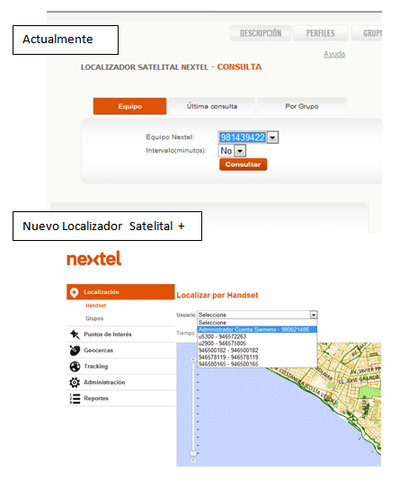

| Este 16 de Julio, renovamos nuestro servicio de Localizador Satelital Nextel con nuestro nuevo servicio Localizador Satelital +. Este servicio contará con nuevas interfaces de usuario y más ventajas que próximamente daremos a conocer. | |
| Nueva interface de consulta de ubicaciones de usuarios o grupos | |
|  | |